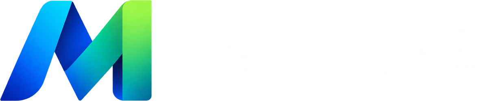

A consistent digital identity for global market education, independent broker reviews and clear financial content.
MarketGB brings markets into focus through structured education, transparent comparisons and practical guidance. The brand feels progressive while remaining calm, evidence-led and responsible about financial risk.
Reduce information complexity so readers can understand their options before they act.
An editorial and comparison platform, clearly distinct from a broker or trading-signal provider.
Every piece of content should help readers ask better questions and assess their options clearly.
The continuous gradient ribbon connects data, insight and progress. A bold wordmark establishes confidence, while the blue “GB” makes the brand name easy to recognize at a glance.


Blue is the primary action color. Teal connects data with insight. Lime is reserved for controlled highlights. Navy gives editorial content and product interfaces a credible foundation.
A screen-first sans serif built for long-form reading, data tables and multilingual publishing. Headlines are compact and confident; body copy remains open and highly readable.
The system prioritizes readability, intent-led navigation and clear comparison modules. Gradients belong in the logo and selected accents, rather than covering the entire interface.
In-depth guides, expert insights and independent comparisons to help you make better-informed decisions.
Components use clean surfaces, light borders and generous spacing. Color creates hierarchy and meaningful signals; it never replaces an explanation.
Regulation, fees, platforms and market availability shown in a consistent structure.
Place costs, account requirements and support side by side with visible sources.
Always pair metrics with conditions, timestamp and source.
Social assets combine short headlines, a clear logo, deep navy and one rich global image. Keep each frame focused instead of filling it with competing information.
“Compare fees, platforms and account requirements.”
“Trading involves risk. Review the conditions before deciding.”
“Based on information verified on 13 September 2026.”
“The safest broker for guaranteed profits.”
“Don’t miss this life-changing opportunity.”
“Open an account now before it’s too late.”
Give the logo sufficient space and contrast. Use the standalone symbol only at small sizes or where the MarketGB name is already clear from context.
Minimum clear space equals the width of the symbol’s right vertical stroke.
✓ Use primary on light surfaces.
✓ Use reverse on navy or dark images.
✓ Use the icon at small sizes.
✓ Preserve the proportions and gradient.
× Do not stretch or rotate the logo.
× Do not introduce off-brand colors.
× Do not place it over busy imagery.
× Do not add shadows, outlines or glow.
Logo variants, icons, social templates, hero image, CSS tokens and usage guidelines.